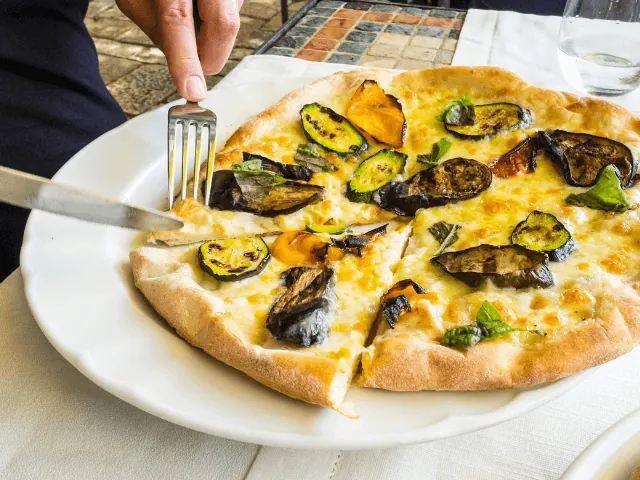
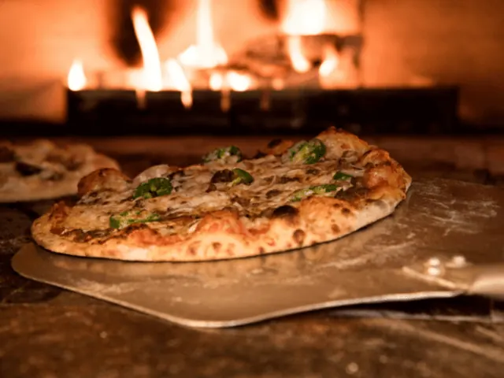
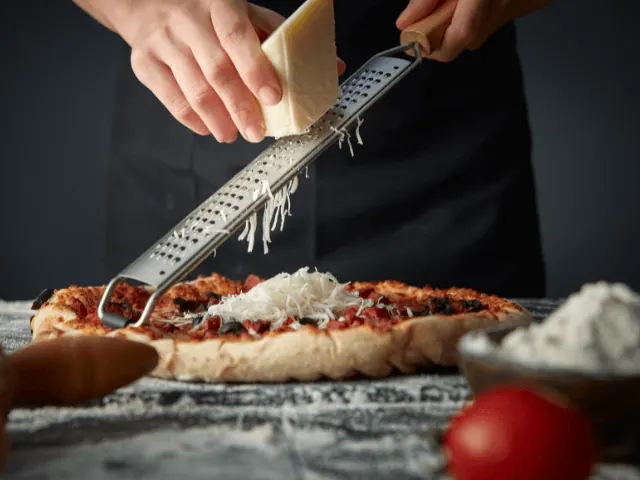

Pizza in Nijmegen: de beste pizzeria's
Gepubliceerd op 21 februari 2023, bijgewerkt op 9 november 2026
Onderdeel van de gids Restaurants in Nijmegen

Een zuurdesempizza in een oude watertoren, een dunne Romeinse pizza of een pizza uit de houtoven met uitzicht op de Waal: Nijmegen heeft meer goede pizzeria's dan je denkt. Dit zijn de beste adressen voor pizza in Nijmegen, om ter plekke te eten of af te halen.
De beste pizzeria's in Nijmegen
Pizzacafé Desem: zuurdesempizza in de watertoren
Onder in de monumentale watertoren bij de makersplaats NYMA aan het Waalplein bakt Pizzacafé Desem zuurdesempizza's van lokale granen. Naast de vaste pizza's staan er wisselende gerechten en desserts op de kaart, en overdag kom je er voor bagels, gebak en koffie. Er is een terras en je kunt je pizza ook afhalen.

Renato's: Romeinse pizza aan de Graafseweg
Bij Renato's, vlak bij Bottendaal, bakken de pizzaioli sinds 2020 dunne, krokante pizza's op z'n Romeins. Begin met burrata of een plankje Italiaanse vleeswaren, en kijk op het bord voor de pizza van de maand met seizoensproducten. Er zijn vegan en glutenvrije opties, en je kunt afhalen of laten bezorgen.
Pizza Pezzo aan de Nassausingel
Op loopafstand van het centrum bakt Pizza Pezzo zijn pizza's in een Moretti-oven, met buffelmozzarella en San Marzano-tomaten. Je kunt er eten, maar de meeste mensen bestellen online en halen hun pizza op of laten hem bezorgen.
Pizza di Valentino op het Honigcomplex
Pizza met uitzicht op de Waal? Op het Honigcomplex aan de Waalbandijk zit de pizzabar van Pizza di Valentino, met ambachtelijke pizza's en andere Italiaanse gerechten in een ontspannen sfeer. Combineer het met een wandeling langs de Waal of een bezoek aan de andere zaken op het Honigcomplex.

Ristorante Pizzeria La Casa in de Molenpoort
Na het winkelen in de binnenstad loop je zo binnen bij La Casa in Passage Molenpoort. Chef Martin Merolli werkt hier al ruim twintig jaar met de Italiaanse keuken, met pizza als grote liefde. Ook voor lunch en met kinderen een fijn adres.
Pizza afhalen of laten bezorgen in Nijmegen
- Il Nano aan de Berg en Dalseweg: een kleine pizzeria met pizza, pasta en ovenschotels. Je kunt er ook een pizzaworkshop doen, leuk voor een kinderfeestje.
- Romagna in de In de Betouwstraat: pizza en pasta, ook glutenvrij, vegetarisch en vegan, om te eten, af te halen of te laten bezorgen.
- Mangiafoco: een pizzafoodtruck in de Steenbokstraat, met Italiaanse ingrediënten zoals nduja en buffelmozzarella en elke dag een pizza van de dag.
- Renato's en Pizza Pezzo (zie hierboven) bezorgen ook.
In de wijken vind je daarnaast veel pizzeria-grillrooms die tot laat bezorgen. Die staan allemaal in onze lijst met pizzeria's.
Onbeperkt pizza en pasta
Bij Osteria Pomodoro in Het Witte Huis in Lent bestel je in rondes via een tablet: bruschetta, pasta, pizza en iets van de grill, voor één vaste prijs. Met een klimparadijs voor kinderen is het populair bij gezinnen. Meer van dit soort restaurants lees je in All you can eat in Nijmegen.

Meer Italiaans eten in Nijmegen
Liever pasta? Bij Merano in de Lange Hezelstraat staan ze al sinds 1940 in de keuken, Zappa's aan Plein 1944 serveert verse pasta zonder te reserveren, en Bar Pasta in Nijmegen-Oost volgt de Italiaanse seizoenen. Meer tips lees je in Italiaans eten in Nijmegen: de beste restaurants en in onze gids restaurants in Nijmegen.
Veelgestelde vragen
Waar eet je de lekkerste pizza in Nijmegen?
Populaire adressen zijn Pizzacafé Desem in de watertoren aan het Waalplein (zuurdesem), Renato's aan de Graafseweg (Romeinse pizza), Pizza Pezzo aan de Nassausingel en Pizza di Valentino op het Honigcomplex.
Waar haal je pizza in Nijmegen?
Afhalen of laten bezorgen kan onder meer bij Il Nano (Berg en Dalseweg), Renato's, Pizza Pezzo en Romagna. In de wijken hebben veel pizzeria-grillrooms ook bezorging.
Waar eet je pizza met uitzicht op de Waal?
Bij Pizza di Valentino op het Honigcomplex aan de Waalbandijk, en bij Pizzacafé Desem aan het Waalplein, vlak bij de Waalkade.
Waar kun je onbeperkt Italiaans eten in Nijmegen?
Bij Osteria Pomodoro in Lent bestel je in rondes pizza, pasta en gerechten van de grill voor één vaste prijs.
Pizza en Italiaans eten in Nijmegen
Zin om te beginnen? In onze bedrijvengids vind je alle 52 pizzeria's en Italiaanse restaurants in Nijmegen, met openingstijden, kenmerken en een kaart.
Bekijk alle 52 pizzeria's en Italiaanse restaurants in Nijmegen
Heb je zelf een pizzeria? Laat je hier uitlichten.